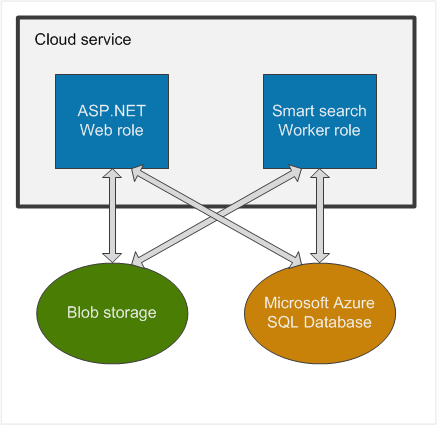

Architecture of Microsoft Azure Cloud Services
This topic describes how Kentico works within the Microsoft Azure environment using Azure Cloud Services, which features of the service are utilized and how the application stores and manages its data in the cloud.

Web role and worker role and their relations with the file system (Blob storage) and database (Microsoft Azure SQL Database)
Application
If you choose to install Kentico as an Azure project, all files will be grouped into a solution based on Visual Studio's Microsoft Azure template. The solution contains several projects. One of them is a web application, which encompasses almost all the functions of Kentico and is designed to run as an Azure ASP.NET Web role.
The Smart search worker is separated from the web application in another project because it cannot run together with the application as the Web role. To index content of websites correctly and effectively, the Smart search worker runs as an Azure Worker role.
Because the application is divided into these two services, you also need to configure them separately. See Configuring Kentico Azure projects for Cloud Services.
Database
Kentico on Microsoft Azure uses an Azure SQL relational database. This database engine is almost identical to the standard SQL Server engine, with only a few limitations. These limitations are taken into account in Kentico, and no additional configuration or customization is required. If you are interested in learning which SQL Server features are not available in Azure SQL, refer to Resolving Transact-SQL differences during migration to SQL Database. Also see our Recommendations on using Azure SQL Database tiers to prevent performance problems.
File storage
Microsoft Azure does not offer a persistent file system similar to the file systems in Windows that you are used to. Data stored within Azure cannot be hierarchically organized into folders. However, Kentico provides an abstract layer called CMS.IO, which enables the system to operate on different types of file storages. See Working with physical files using the API for more information.
The CMS.IO namespace acts as an intermediary between the Kentico business layer and various file storages, including Azure blob storage. On a standard non-Azure installation, CMS.IO only overrides the System.IO namespace. On Microsoft Azure, the namespace uses a provider which works with the blob storage, creating an imitation of the regular Windows file system. The CMS.IO namespace can be extended to support any other type of storage, e.g. the Amazon cloud drive.
Additionally, you can make use of the Azure storage provider and store files in the cloud even if you're running a non-Azure installation. You can find more information about this approach in Configuring Azure storage.
The file storage is shared across multiple web role instances, therefore, no file synchronization is needed.
Case sensitivity
Unlike Windows file systems, the blob storage is case-sensitive. As a result, names of all files processed by Kentico are converted to lower case before saving.
Multiple web role instances
Kentico application can run in multiple instances of one web role on Microsoft Azure. Therefore, the data must be synchronized between these instances. Kentico handles the synchronization by treating each instance as a web farm server. When you set the number of instances, the web farm servers are configured automatically. Also, web farm tasks are created and executed automatically so no manual configuration is needed.
Storing session state
Every complex web application needs to store information about its state, especially user session data. Since the Azure environment is dynamic and the application does not reside constantly in one place, its state has to be stored separately. When your application uses only one web role instance, the session state data can be stored on that instance. If your application uses two or more web role instances, you need to configure your project to store the session state data elsewhere. We recommend these options for storing the session state data:
In Microsoft Azure SQL Database – easy to set up, suitable for small projects or projects with mostly read access to web pages.
In Microsoft Azure Redis Cache – more suitable for larger projects than the Azure SQL database option, but requires configuration of Azure Redis Cache.
See Storing cache and session state data in Azure environment for more information.
Microsoft Azure Web Apps or Virtual Machines
This section describes the setup and deployment of Kentico to an Azure Cloud Service. However, there are other Azure environments, in which Kentico is supported as well.
Web Apps are quick to deploy and easy to set up and manage. However, they do not offer as much customization options as cloud services. See Setting up Kentico in Azure Web Apps for information on how to set up Web Apps.
Virtual Machines allow you to configure and maintain a virtual server in the cloud. They offer more control but require complex setup. You can start using the Virtual Machines by creating one in the Azure Management Portal.
For a more detailed comparison of all three services provided by Microsoft Azure, see the Azure App Service, Virtual Machines, Service Fabric, and Cloud Services comparison article.